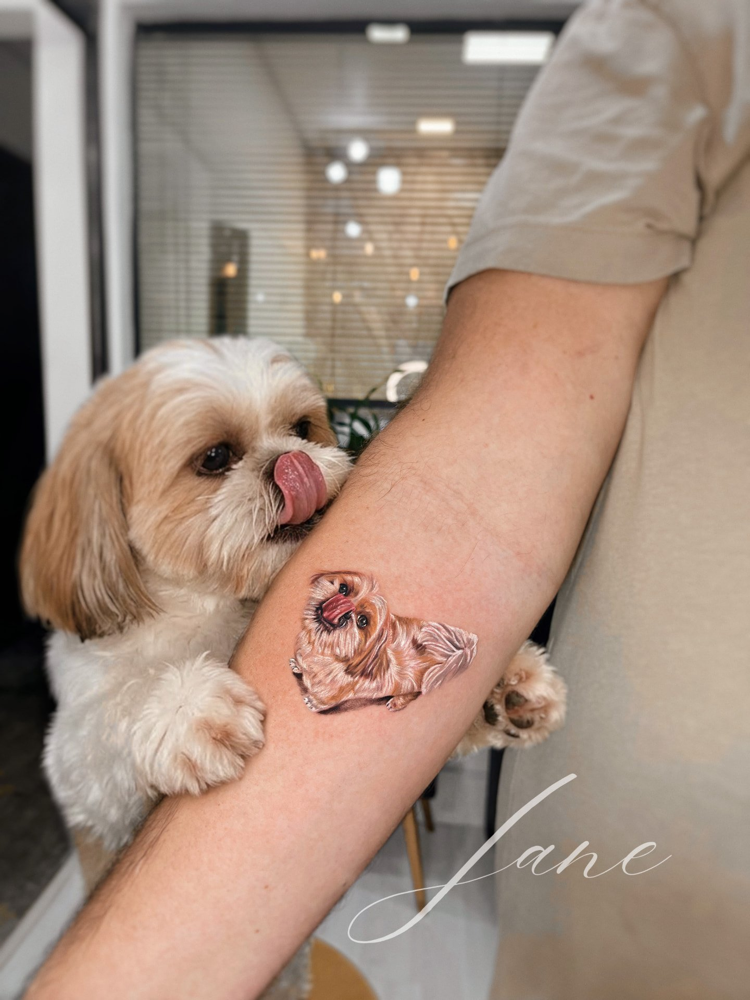
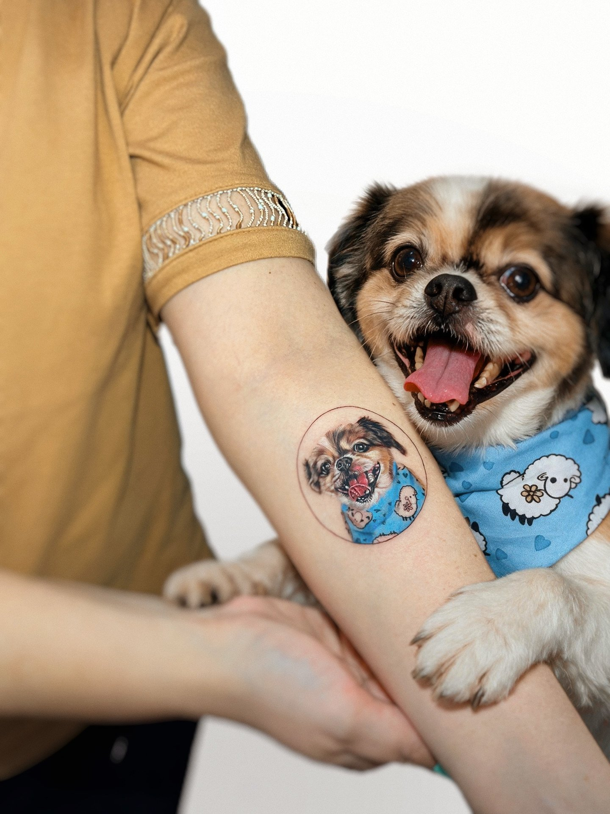
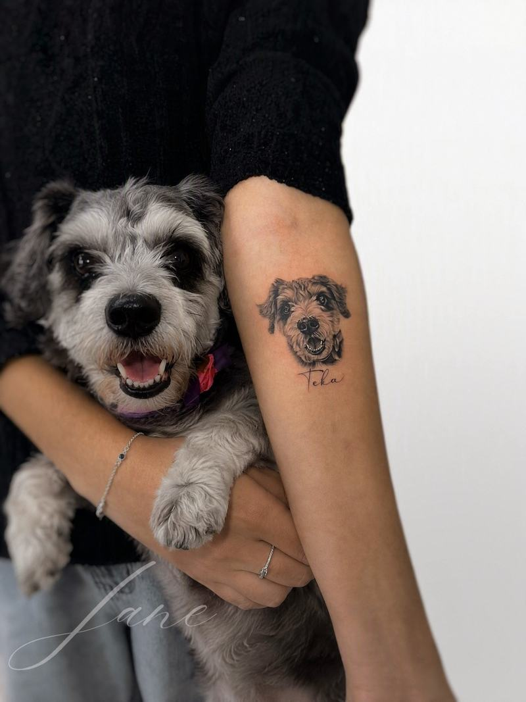
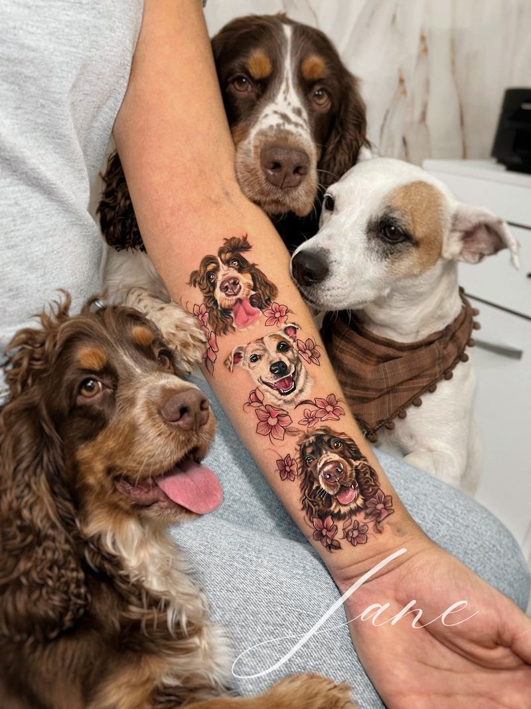
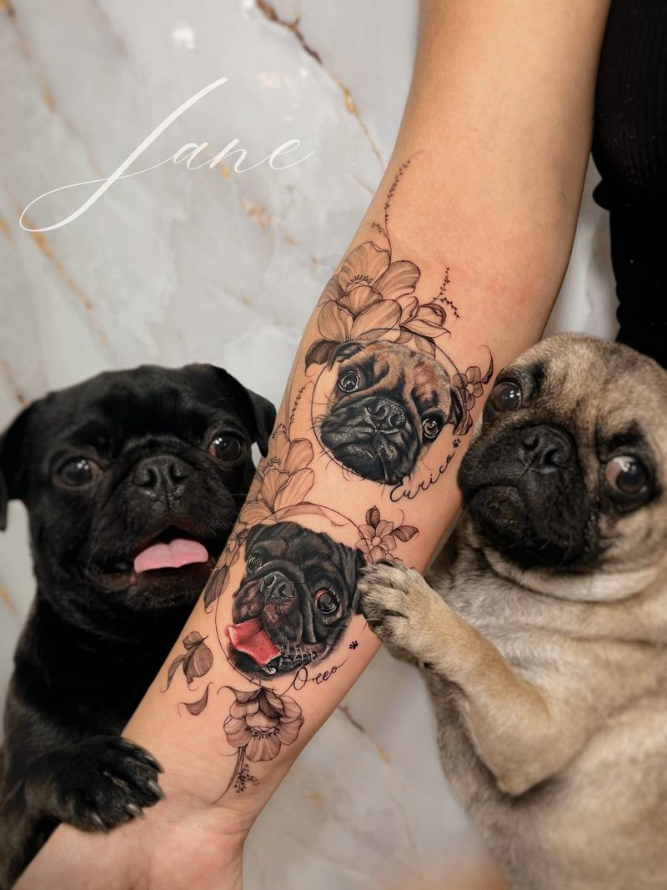
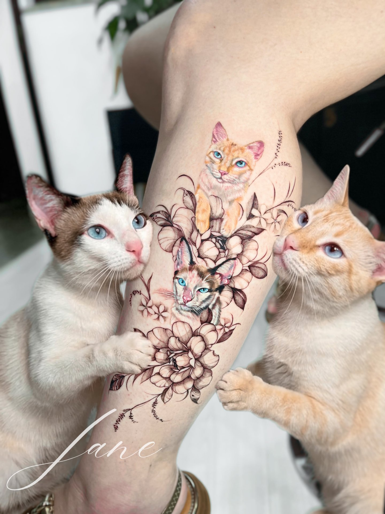
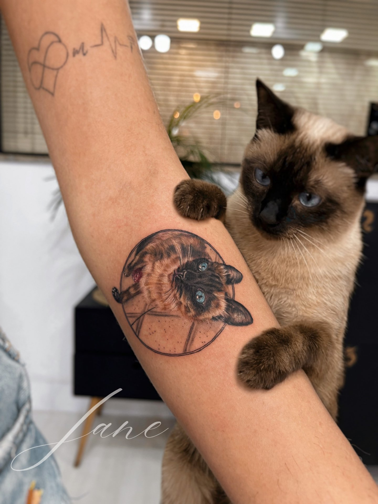
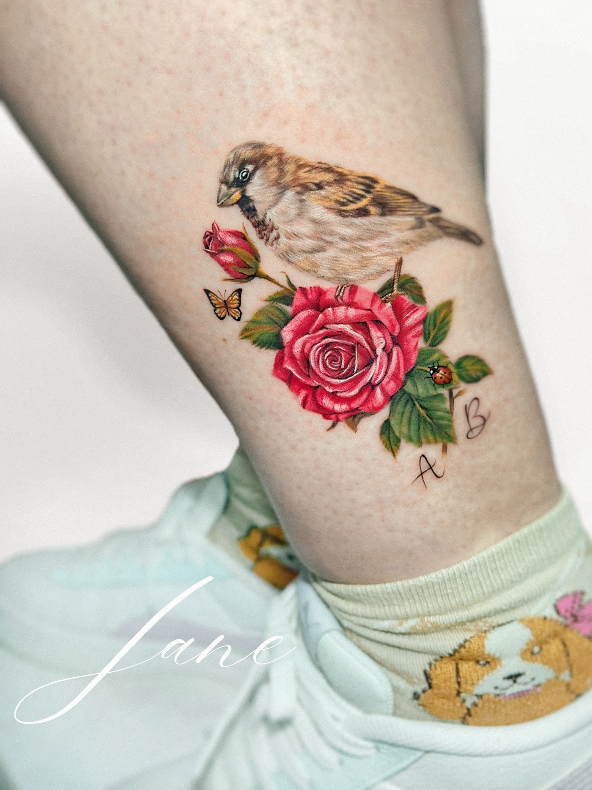
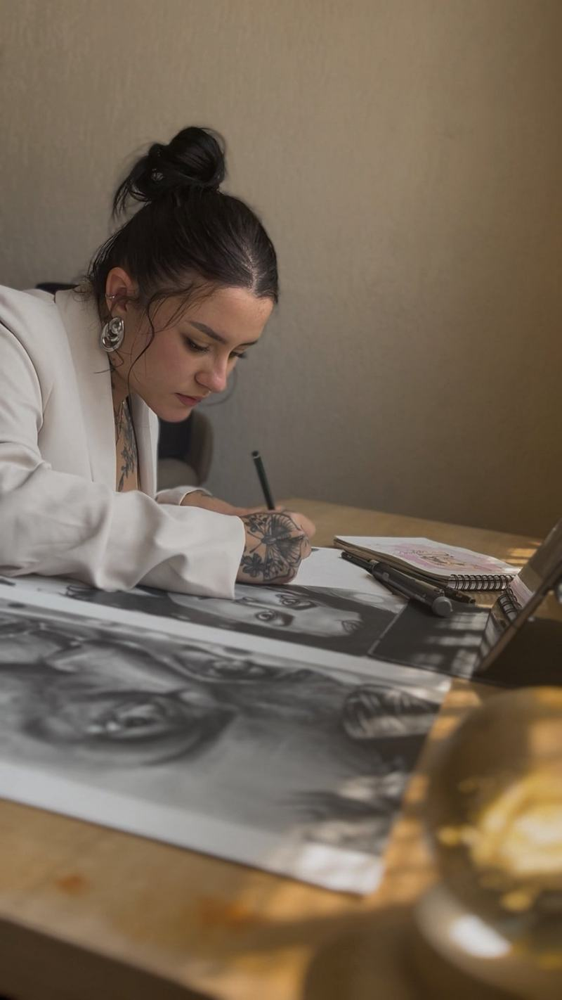

Cães
Retratos realistas que preservam a expressão, o olhar e a personalidade do seu companheiro.



JANE D’JESUS
realismo pet
Retratos hiper-realistas feitos para transformar a história, a personalidade e o amor pelo seu animal em uma tatuagem única.
Especialista em Realismo Pet
Portfólio
Cada tatuagem nasce de uma história diferente. O objetivo é preservar em cada detalhe aquilo que torna aquele Pet único.





Especialização

Retratos realistas que preservam a expressão, o olhar e a personalidade do seu companheiro.
Detalhes, textura e expressão trabalhados para transformar seu gato em uma obra de arte única.

Cada animal possui características únicas. O projeto é desenvolvido respeitando sua anatomia, expressão e personalidade.
A artista
Há aproximadamente 6 anos, Jane D’Jesus encontrou na tatuagem uma forma de transformar histórias e sentimentos em arte. Ao longo dessa trajetória, direcionou seu trabalho para uma especialização: o Realismo Pet. Hoje, seu trabalho é dedicado a representar animais de estimação através de uma combinação de técnica, precisão, sensibilidade e atenção aos detalhes.
Cada projeto começa muito antes da agulha tocar a pele. Existe uma fotografia, uma história, uma personalidade e uma relação que precisam ser compreendidas. Por isso, cada tatuagem é desenvolvida de maneira individual, buscando preservar aquilo que torna aquele Pet verdadeiramente único.
6 anos transformando memórias em arte.
O processo
Você envia algumas informações sobre seu Pet e explica o que imagina para a tatuagem.
A referência é analisada considerando composição, tamanho, região do corpo e características do animal.
A tatuagem é planejada individualmente para preservar a identidade do seu Pet.
No momento da tatuagem, aquela memória ganha uma nova forma e passa a acompanhar você para sempre.
Dúvidas
Prefira fotos nítidas, bem iluminadas e que mostrem claramente o rosto e os detalhes do seu Pet. Quanto melhor a referência, mais informações teremos para trabalhar a expressão e as características dele.
O tamanho depende principalmente do nível de detalhe que você deseja e da região escolhida. Durante a análise do projeto conseguimos orientar sobre uma proporção adequada para preservar o realismo da tatuagem.
Sim. Esse é um dos projetos que carregam um significado muito especial. A partir de uma boa fotografia, é possível desenvolver uma representação artística para eternizar essa memória.
O orçamento é individual e depende principalmente do tamanho, região do corpo e características do projeto. Para receber uma orientação inicial, basta preencher o formulário no final da página com algumas informações sobre a tatuagem.

Seu Pet fez parte da sua rotina, dos seus momentos e da sua história. Uma tatuagem pode ser muito mais do que uma imagem. Pode ser uma forma de carregar essa história com você.
Vamos começar
Conte um pouco sobre o seu projeto. Com essas informações, conseguimos entender melhor sua ideia e dar continuidade ao atendimento pelo WhatsApp.